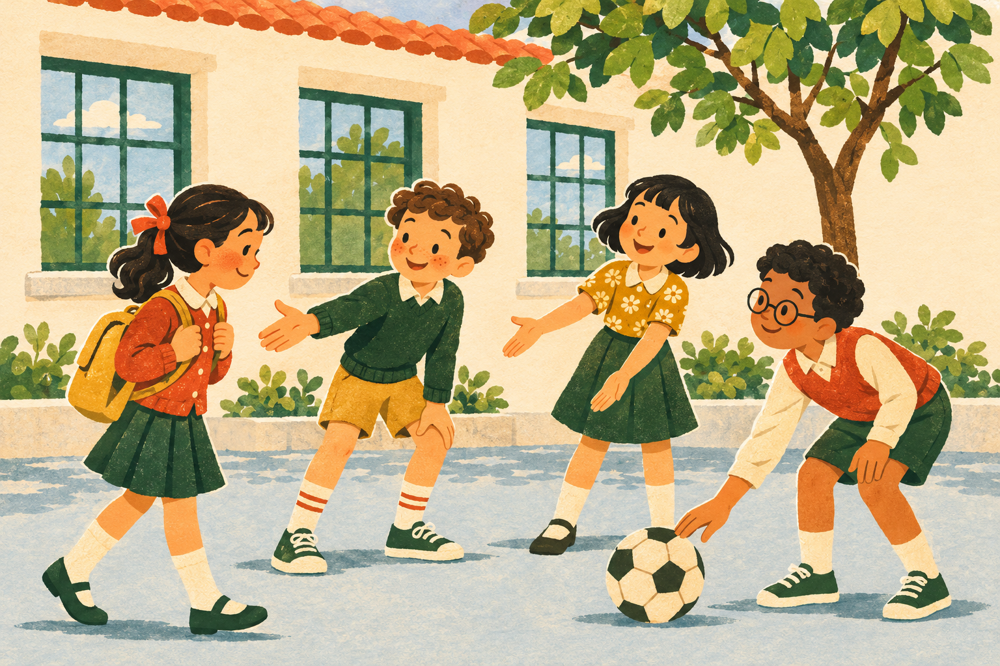

Na Escola
Posso jogar também?
Estás a jogar com colegas no recreio. Há espaço para mais uma pessoa. Um colega que ainda não jogou pergunta se pode participar.
O que fazes?
Resultado
Errado neste caso.
Estás a excluir a pessoa antes de lhe dares oportunidade de participar.
Certo.
Acolher e combinar as regras ajuda todos a participar.
Errado neste caso.
Ignorar o pedido deixa a pessoa de fora sem explicação.
A solução comum às três escolhas
Se há espaço, podemos incluir quem quer participar e combinar as regras. Jogar em conjunto não exige que todos tenham a mesma experiência.

Um pequeno gesto para experimentar
Repara em quem está de fora e faz um convite.